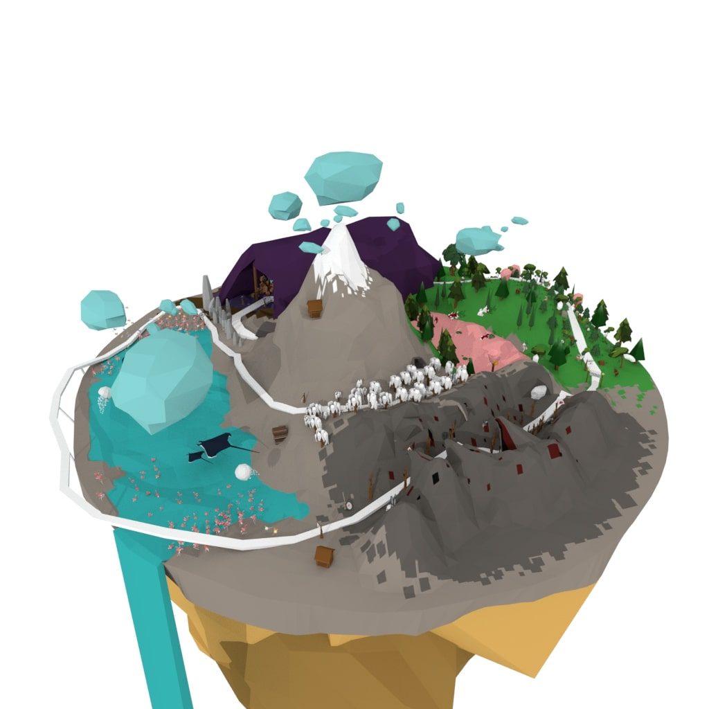
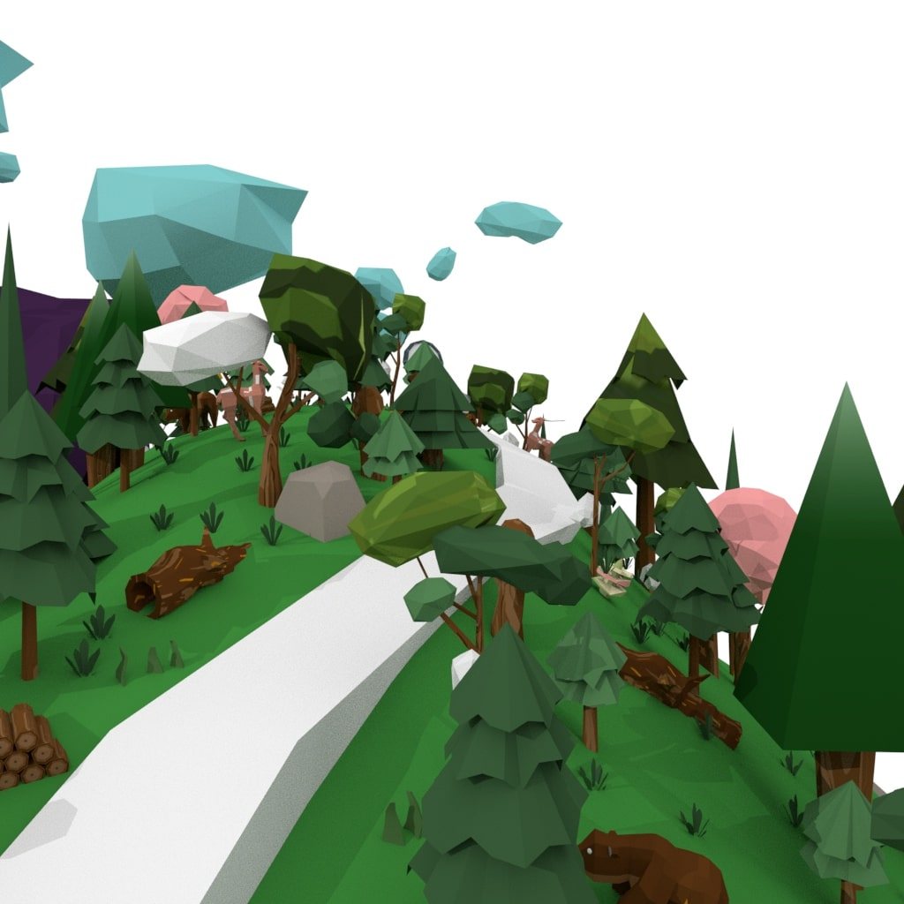
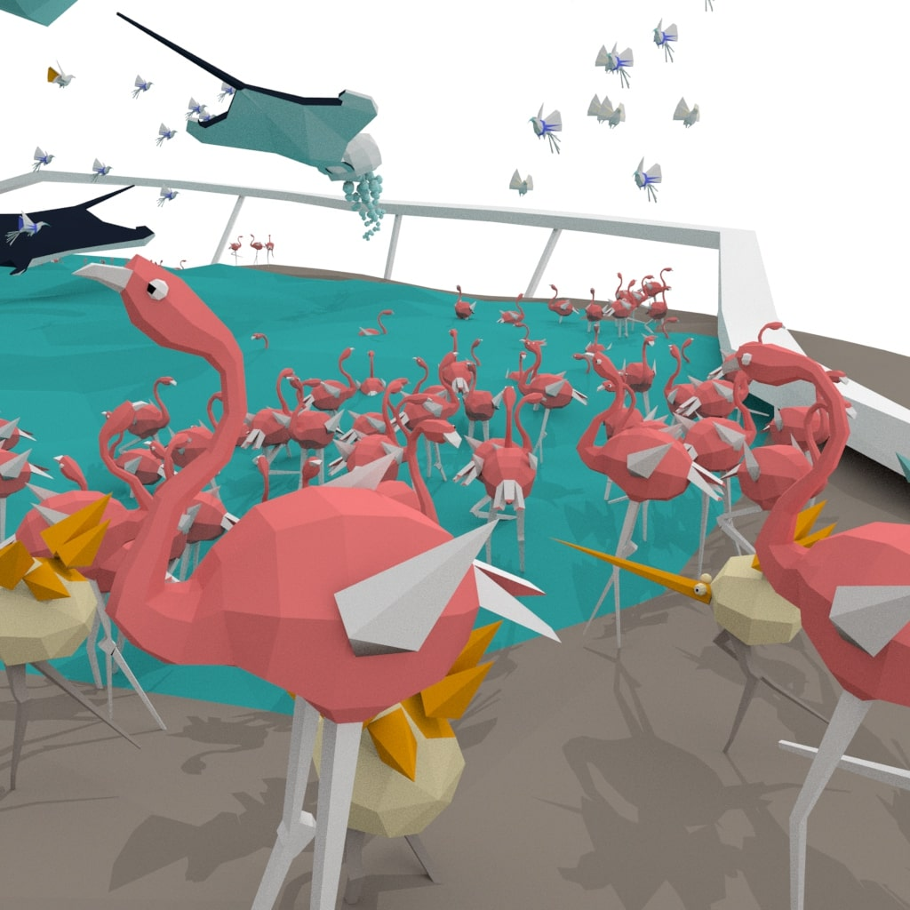
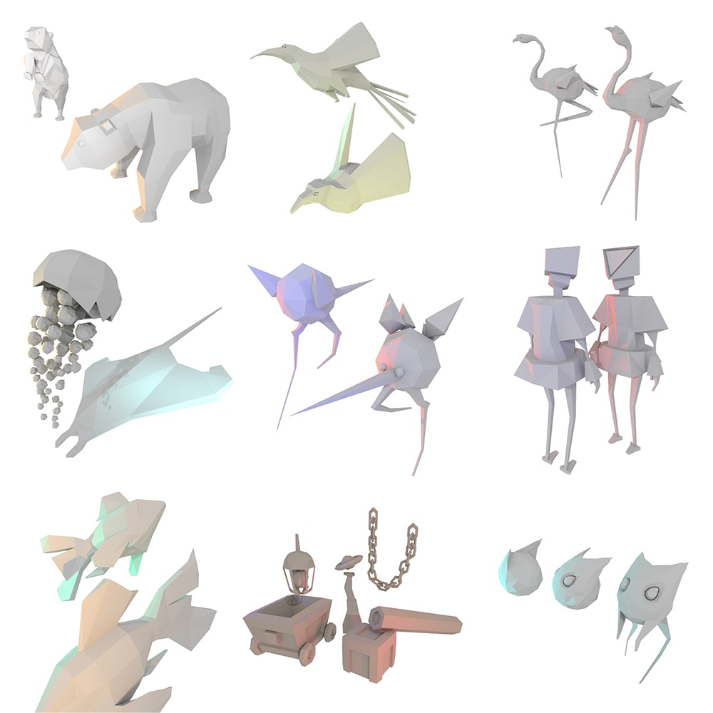

Misty Island
3D environment design
2018


About
Misty Island is the first 3D environment I created using Maya and Unity 3D. It consists of four areas, with a one-way journey beginning with a hill, a cave with crystals, a lake full of flamingos, and ending with a rugged valley.
This individual project led me into the area of 3D design, broadened the possibilities for me to present and apply my creative ideas into a more immersive medium.
Development
Tools
3D scene development – Unity 3D
3D modelling - Autodesk Maya
Texture design - Adobe Photoshop
Music and sound editing - Logic Pro X
Misty Island Misty Island Misty Island Misty Island Misty Island Misty Island Misty Island Misty Island Misty Island Misty Island Misty Island Misty Island

